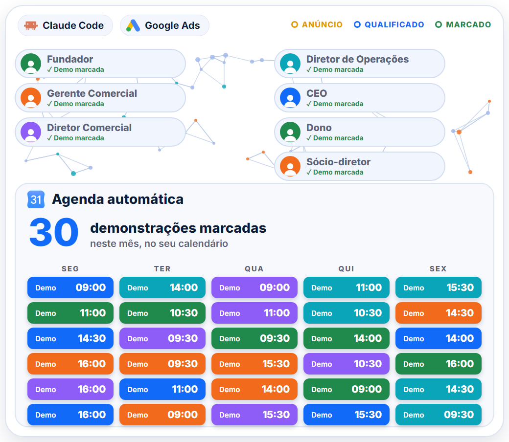
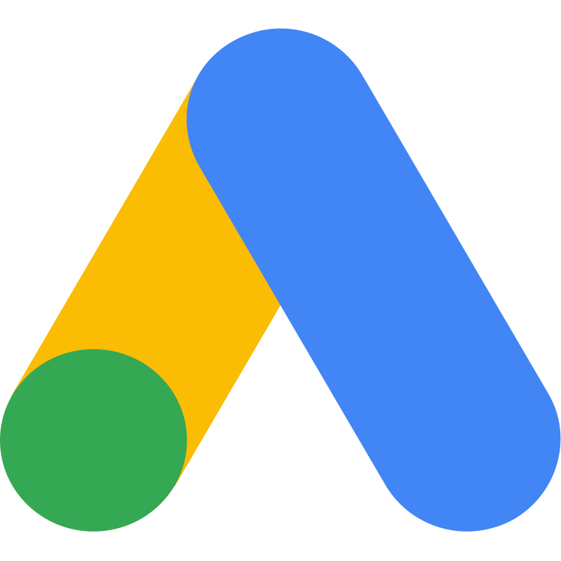

O caminho completo, em uma imagem


Anúncio Página e quiz
Página e quiz Demonstração marcada
Demonstração marcadaComo usar em 3 passos
Faça a conta da sua meta
No passo 2 você descobre quantas visitas e quanta verba as 30 demonstrações pedem. É a conta mais importante do material.
Copie o quiz e os comandos
O quiz, os comandos do Claude e do Claude Code e as mensagens de confirmação estão prontos abaixo.
Acompanhe toda semana
O placar semanal mostra se você está no ritmo e o que ajustar antes de o mês acabar.
Meta de demonstração se constrói de trás para frente
Muita empresa de software liga o anúncio e torce para a agenda encher. Quando não enche, ninguém sabe se faltou verba, visita, filtro ou lembrete. Aqui a conta começa pela meta: 30 demonstrações marcadas no mês e, de trás para frente, quantas pessoas precisam passar em cada etapa para isso acontecer.
E agenda cheia só vale se for de demonstração qualificada: gente com poder de decisão, verba e prazo. Por isso o quiz vem antes da agenda. Quem não passa recebe uma resposta educada e não ocupa o horário do seu time.
Demonstração qualificada é a demonstração marcada por alguém que decide ou influencia a compra, tem verba ou está levantando e quer resolver nos próximos meses.
Sete passos, da meta ao placar da semana
Defina o que é uma demonstração qualificada
Antes de qualquer anúncio, escreva a ficha. Ela decide quem entra na agenda e quem fica de fora. Quanto mais clara, mais fácil o quiz fica.
| Critério | Entra na agenda | Fica de fora |
|---|---|---|
| Quem é | [CARGOS QUE DECIDEM OU INFLUENCIAM] | [ESTUDANTE, CONCORRENTE, SEM CARGO DE DECISÃO] |
| Tamanho da empresa | [FAIXA QUE O SEU SOFTWARE ATENDE] | [ABAIXO OU ACIMA DA FAIXA] |
| Verba | Tem verba ou está levantando | Sem verba e sem previsão |
| Prazo | Quer resolver neste mês ou em até 3 meses | Só está pesquisando |
| Problema | [O PROBLEMA QUE O SEU SOFTWARE RESOLVE] | [PROBLEMA QUE ELE NÃO RESOLVE] |
Dica: olhe as últimas 10 demonstrações que viraram venda. O que elas tinham em comum entra na coluna "entra na agenda".
Faça a conta de trás para frente
Escreva as taxas de cada etapa. Se você ainda não tem os números, use as sugestões em cinza (são valores de exemplo, troque assim que tiver os seus). A calculadora diz quantas pessoas precisam entrar na página, quanto isso custa e quanto sai cada demonstração.
| O que você precisa informar | Seu número |
|---|---|
| Meta de demonstrações marcadas no mês | |
| De cada 100 que passam no quiz, quantos marcam a demonstração (%) | |
| De cada 100 que terminam o quiz, quantos passam (%) | |
| De cada 100 que entram na página, quantos terminam o quiz (%) | |
| Quanto custa cada clique no anúncio (R$) |
| O que a sua meta pede | Resultado |
|---|---|
| Pessoas que precisam passar no quiz | – |
| Pessoas que precisam terminar o quiz | – |
| Pessoas que precisam entrar na página (cliques) | – |
| Verba de anúncio no mês | – |
| Custo por demonstração marcada | – |
Repare no que a conta mostra: a etapa com a menor taxa é a que mais pesa na verba. Melhorar essa etapa vale mais do que gastar mais no anúncio.
Monte o quiz que filtra
As perguntas são de escolha, sem texto livre, e levam no máximo 1 minuto. Quatro delas dão nota e decidem quem vê a agenda. A quinta serve para você aprender.
| Pergunta | Opções de resposta | Nota |
|---|---|---|
| 1. Qual é o seu papel na escolha de um software como este? | Eu decido · Eu influencio a decisão · Só estou pesquisando | 0 a 2 |
| 2. Já existe verba para isso? | Sim · Estou levantando · Não | 0 a 2 |
| 3. Para quando você precisa resolver? | Este mês · Em 1 a 3 meses · Mais de 3 meses | 0 a 2 |
| 4. Quantas pessoas trabalham na sua empresa? | [FAIXAS DA SUA FICHA DO PASSO 1] | 0 a 2 |
| 5. Qual é o seu maior problema hoje? | [4 PROBLEMAS QUE O SEU SOFTWARE RESOLVE, UM POR OPÇÃO] | aprende |
Regra de nota: de 6 a 8 pontos, a pessoa vê a agenda. Abaixo de 6, recebe uma mensagem educada com um conteúdo útil (e pode voltar quando estiver pronta). Ajuste a nota de corte depois das primeiras semanas.
Você é especialista em qualificação de compradores de software para empresas. Monte um quiz de 5 perguntas de escolha (sem texto livre) para filtrar quem pode marcar uma demonstração do meu software. Use esta ficha de demonstração qualificada: [COLE AQUI A FICHA DO PASSO 1] Regras: - Perguntas 1 a 4 dão nota de 0 a 2; a nota máxima é 8. Mostre a nota de cada opção. - A pergunta 5 não dá nota: serve para eu aprender qual é o maior problema de quem responde (uma opção por problema que o meu software resolve). - Quem tira 6 ou mais vê a agenda. Quem tira menos recebe uma mensagem educada, sem fazer a pessoa se sentir rejeitada, com uma dica útil. - Linguagem simples, sem sigla, sem promessa de resultado. - Entregue as perguntas, as opções com a nota, a mensagem de quem passa e a mensagem de quem não passa. Meu software: [O QUE ELE FAZ, EM 2 FRASES]
Peça ao Claude os anúncios de busca e do LinkedIn
O Google Ads mostra o seu anúncio para quem está pesquisando uma solução naquele momento. O anúncio no LinkedIn encontra o cargo certo. O comando abaixo monta os dois a partir da sua ficha.
Você é especialista em anúncios para vender software para empresas. Com base na ficha abaixo, crie: A) Anúncios de busca para o Google Ads: - 10 palavras ou frases que o comprador pesquisa quando tem o problema (use as palavras dele, em português simples). - 3 anúncios com 3 títulos de até 30 caracteres e 2 descrições de até 90 caracteres cada. - 10 palavras para excluir (para não pagar por quem só está estudando ou procurando emprego). B) Anúncios para o LinkedIn: - 3 textos curtos para os cargos que decidem a compra, cada um falando de um problema da ficha, e terminando em "responda ao quiz de 1 minuto e veja se faz sentido marcar uma demonstração". - Sugestão de cargos e tamanhos de empresa para segmentar. Regras: tudo precisa ser verdade, sem prometer resultado, sem número que eu não tenha dado, sem sigla. Ficha de demonstração qualificada: [COLE AQUI A FICHA DO PASSO 1] Meu software: [O QUE ELE FAZ, EM 2 FRASES]
Confira antes de publicar: leia cada anúncio como se fosse o comprador. Se ele prometer o que o software não faz, corrija.
Peça ao Claude Code para criar a página, o quiz e a agenda
O Claude Code é um programa que escreve o código a partir do que você pede em português. Em vez de contratar alguém para montar a página, você descreve o que quer e ele cria os arquivos.
Crie uma página simples, rápida no celular, com este fluxo: 1. Um título que fala do problema do comprador e uma frase explicando que o quiz leva 1 minuto. 2. O quiz com as 5 perguntas abaixo, uma por tela, com botões de escolha. 3. Somar a nota das perguntas 1 a 4 (cada opção já tem a nota). 4. Nota de 6 a 8: mostrar a agenda (incorporar o link de agendamento: [LINK DA AGENDA]) de segunda a sexta. 5. Nota abaixo de 6: mostrar a mensagem educada e um conteúdo útil, sem agenda. 6. Guardar as respostas e a nota (nome, cargo, empresa, e-mail, telefone), com uma caixa de autorização, não marcada, explicando para que os dados serão usados. 7. Guardar também de qual anúncio a pessoa veio. Quiz e notas: [COLE AQUI O QUIZ DO PASSO 3] Regras: texto simples, sem promessa de resultado, sem número inventado. Antes de mexer em qualquer coisa, me mostre o plano.
Teste antes de ligar o anúncio: responda o quiz você mesmo de três jeitos (nota alta, média e baixa) e confirme que cada resultado leva para o lugar certo.
Use as mensagens de confirmação para reduzir a falta
Demonstração marcada que ninguém vê vira horário perdido do seu time. Uma sequência curta de mensagens costuma resolver boa parte disso.
| Quando | Mensagem (adapte) |
|---|---|
| Na hora de marcar | Oi, [NOME]. Sua demonstração ficou marcada para [DIA] às [HORA]. O link da conversa está aqui: [LINK]. |
| 1 dia antes | Oi, [NOME]. Amanhã, às [HORA], a gente conversa sobre [PROBLEMA QUE ELE MARCOU NO QUIZ]. Se algo mudou, é só me avisar que remarco. |
| 2 horas antes | Oi, [NOME]. Daqui a pouco, às [HORA]. Segue o link: [LINK]. Se não conseguir, me avise e eu remarco. |
| Se faltou | Oi, [NOME]. Não consegui te ver hoje, tudo bem? Quer que eu remarque para outro dia? |
Reescreva as 4 mensagens abaixo para o tom da minha empresa: [DESCREVA O TOM, EM UMA FRASE]. Regras: no máximo 3 linhas cada, sem pressão, uma só pergunta, sem emoji em excesso, sem prometer nada que o meu time não vai entregar. Mensagens: [COLE AQUI A TABELA]
Acompanhe o placar toda semana
Olhar só no fim do mês é tarde. Toda segunda, escreva quantas demonstrações já foram marcadas e quantos dias úteis passaram. A calculadora diz se você está no ritmo e para onde o mês caminha.
| O que você precisa informar | Seu número |
|---|---|
| Meta de demonstrações marcadas no mês | |
| Quantas já estão marcadas | |
| Dias úteis que já passaram no mês | |
| Dias úteis do mês inteiro |
| Placar | Resultado |
|---|---|
| Ritmo que a meta pede por dia útil | – |
| Quantas deveriam estar marcadas até hoje | – |
| Diferença (marcadas menos esperadas) | – |
| Para onde o mês caminha | – |
Com o placar na mão, peça ao Claude para ler os números e sugerir o ajuste da semana.
Vou te passar o placar do mês de demonstrações do meu software. Em português simples: 1. Diga se estou no ritmo, na frente ou atrás da meta, e por quanto. 2. Olhe as taxas de cada etapa (entraram na página, terminaram o quiz, passaram, marcaram, compareceram) e diga qual etapa está mais fraca. 3. Sugira 3 ajustes para a próxima semana: um no anúncio, um no quiz ou na página e um na confirmação das demonstrações. Regras: use só os números que eu passar. Se houver poucos dados (menos de 10 demonstrações marcadas), avise que é uma pista e não uma conclusão. Não invente número nem afirme o que causou o resultado. Placar: Meta do mês: [NÚMERO] · Marcadas até agora: [NÚMERO] · Dias úteis passados: [NÚMERO] de [NÚMERO] Entraram na página: [NÚMERO] · Terminaram o quiz: [NÚMERO] · Passaram: [NÚMERO] · Marcaram: [NÚMERO] · Compareceram: [NÚMERO] Verba gasta: R$ [NÚMERO]
O que a inteligência artificial não decide sozinha
| A inteligência artificial pode | Uma pessoa decide |
|---|---|
| Montar o quiz, os anúncios e as mensagens | O que está escrito: tudo precisa ser verdade, sem promessa de resultado |
| Criar a página e somar a nota | A nota de corte e o que fazer com quem ficou de fora |
| Calcular o ritmo e apontar a etapa fraca | Quando há dados suficientes para mudar o rumo |
O quiz marca a demonstração, não fecha a venda. Quem conduz a demonstração e a proposta continua sendo o seu time comercial.
A meta de 30 é um exemplo. A calculadora serve para qualquer número. O que o seu anúncio entrega depende do seu software, do seu público, da sua verba e do seu time, e este material não promete resultado.
Dados pessoais: peça só o necessário, escreva na página para que os dados serão usados e tenha uma caixa de autorização, não marcada. Revise com quem cuida de privacidade na sua empresa.
Funciona sem comprar nada específico: a agenda pode ser qualquer ferramenta de agendamento e as páginas podem ser publicadas onde você já publica o seu site.
Como fica a conta da meta de 30
Valores de exemplo, para mostrar como usar a calculadora. Não são o resultado de um cliente.
| Informado (exemplo) | Valor |
|---|---|
| Meta de demonstrações marcadas | 30 |
| Marcam, de quem passa | 60% |
| Passam, de quem termina o quiz | 30% |
| Terminam o quiz, de quem entra | 45% |
| Custo por clique | R$ 12 |
| O que a meta pede (exemplo) | Resultado |
|---|---|
| Passam no quiz | 50 |
| Terminam o quiz | 167 |
| Entram na página | 372 |
| Verba de anúncio no mês | R$ 4.464 |
| Custo por demonstração marcada | R$ 149 |
Leitura do exemplo: a etapa mais fraca é "passar no quiz" (30%). Deixar o anúncio mais certeiro, para chegar menos gente fora do perfil, derruba a verba mais do que simplesmente colocar mais dinheiro.
Os números acima são de exemplo e não representam um caso real.

Há mais de 5 anos trabalho com marketing digital. Sou formado em Marketing e me especializei em tráfego pago, com foco em performance: já investi mais de R$ 5 milhões em mídia paga.
Hoje, à frente da Zayvon, ajudo empresas B2B a estruturar a venda pela internet, do anúncio ao fechamento, por meio do Aquisição Previsível.
Na prática, conecto o anúncio, o filtro que separa lead bom de lead ruim, a automação, a inteligência artificial e o sistema que organiza os contatos do time comercial. O anúncio atrai quem realmente pode comprar, e a agenda do seu time fica reservada para essa pessoa.
O próximo passo
Se quiser olhar a conta da sua meta junto, é só pedir uma conversa.